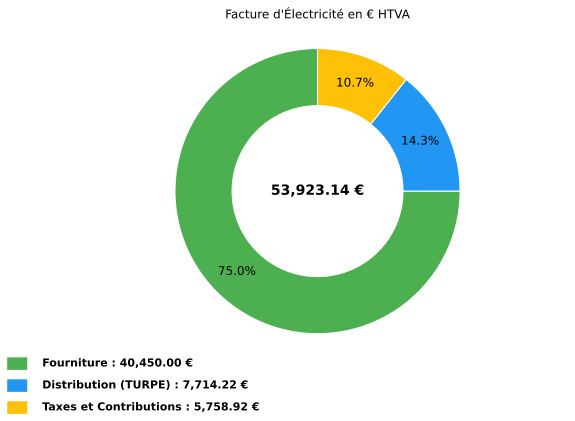
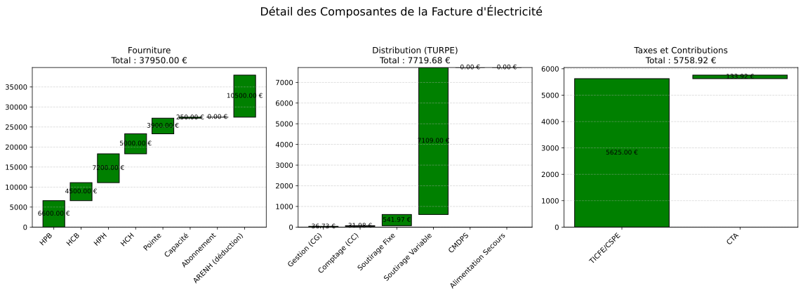

10.1.2.3. Example HTA – CU_pf
Contexte : Un site industriel agroalimentaire raccorde en HTA (20 kV), option Courte Usage fixed peak. Power souscrite 500 kW, consumption hivernale typique. Facturation de February 2025.
from Facture.TURPE import input_Contrat, TurpeCalculator, input_Facture, input_Tarif
# Contrat HTA CU_pf — site industriel 500 kW
contrat = input_Contrat(
domaine_tension="HTA",
PS_pointe=500, PS_HPH=500, PS_HCH=500, PS_HPB=500, PS_HCB=500,
version_utilisation="CU_pf",
pourcentage_ENR=0,
)
# Tarifs fournisseur (contrat de marche)
tarif = input_Tarif(
c_euro_kWh_pointe=0.13,
c_euro_kWh_HPH=0.12,
c_euro_kWh_HCH=0.10,
c_euro_kWh_HPB=0.11,
c_euro_kWh_HCB=0.09,
c_euro_kWh_certif_capacite_pointe=0.001,
c_euro_kWh_certif_capacite_HPH=0.001,
c_euro_kWh_certif_capacite_HCH=0.001,
c_euro_kWh_certif_capacite_HPB=0.001,
c_euro_kWh_certif_capacite_HCB=0.001,
c_euro_kWh_ENR=0.01,
c_euro_kWh_ARENH=0.042,
)
# Consommation mensuelle (~250 MWh/mois, coherent avec 500 kW)
facture = input_Facture(
start="2025-02-01",
end="2025-02-28",
kWh_pointe=30000, # ~140 kWh/h x 18j pointe x 12h
kWh_HPH=60000, # Heures pleines hiver
kWh_HCH=50000, # Heures creuses hiver
kWh_HPB=60000, # Heures pleines ete
kWh_HCB=50000, # Heures creuses ete
)
calc = TurpeCalculator(contrat, tarif, facture)
calc.calculate_turpe()
# Resultats
print(calc.df_totaux)
calc.plot()
calc.plot_detail()
Output realle (df_totaux) :
Ligne Formule Entrée(s) Coefficient Résultat
Fourniture 40450.00
Acheminement (TURPE) 7714.22
Taxes et contributions 5758.92
= Total HTVA Fourniture + TURPE + Taxes 53923.14
TVA 20% Total_HTVA x 20% 10784.63
= Total TTC HTVA + TVA 64707.77
Coût HTVA (EUR/MWh) Total_HTVA / MWh 250.00 MWh 215.69
Coût fourniture (EUR/MWh) Fourniture / MWh 161.80
Coût distribution (EUR/MWh) TURPE / MWh 30.86
Coût taxes (EUR/MWh) Taxes / MWh 23.04
Plots générés by l’example
Les figures ci-dessous sont les real outputs are shown de calc.plot() et
calc.plot_detail() for les data de l’example.

Répartition HTVA between fourniture, acheminement TURPE et taxes.

Cascades détaillées by composante de fourniture, distribution et taxes.